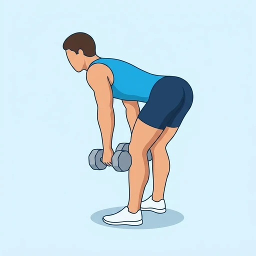

Dumbbell Romanian Deadlift
A hip-hinge movement with dumbbells and soft knees, loading the hamstrings and glutes through a controlled stretch.
Back · Dumbbell · Intermediate


Muscles worked by the Dumbbell Romanian Deadlift
Primary
Secondary
Also called: glute, glutes, gluteus maximus, buttocks, butt, hamstring.
Equipment
Also called: db, dumbell, hex dumbbell, rubber dumbbell, hand weight.
How to do the Dumbbell Romanian Deadlift
- Stand holding dumbbells in front of your thighs with a soft knee bend.
- Hinge at the hips and push your glutes back.
- Lower the dumbbells along your legs until you feel a hamstring stretch.
- Keep your back flat and shoulders pulled back.
- Drive your hips forward to return to standing.
- Repeat for the desired number of reps.
Form tips
- Keep your knee angle constant; the movement is a hinge, not a squat.
- Tuck your chin slightly to keep your spine in one straight line.
- Squeeze your glutes at the top without leaning backward.
At a glance
| Body part | Back |
|---|---|
| Category | Strength |
| Force type | Pull |
| Mechanic | Compound |
| Difficulty | Intermediate |
| Equipment | Dumbbell |
| Goals | Hypertrophy, Strength |
| Tags | Knee safe, Shoulder safe |
| MET | 6.0 (metabolic equivalent, for calorie estimates) |
| Unilateral | No |
| Bodyweight | No |
| Dataset id | dumbbell-romanian-deadlift |
Dumbbell Romanian Deadlift in German & Spanish
| German | Kurzhantel Rumänisches Kreuzheben |
|---|---|
| Spanish | Peso Muerto Rumano con Mancuernas |
Descriptions, instructions and tips ship in all three languages in the JSON.
Related exercises
Exercise data (JSON)
The record below is exactly what exercises.json ships for this exercise — names, descriptions, instructions and tips in English, German and Spanish.
{
"id": "dumbbell-romanian-deadlift",
"name_en": "Dumbbell Romanian Deadlift",
"name_de": "Kurzhantel Rumänisches Kreuzheben",
"name_es": "Peso Muerto Rumano con Mancuernas",
"description_en": "A hip-hinge movement with dumbbells and soft knees, loading the hamstrings and glutes through a controlled stretch.",
"description_de": "Eine Kreuzheben-Variante mit Kurzhanteln, bei der die Hüfte bei leicht gebeugten Knien nach hinten geschoben wird, um die Beinbeuger zu dehnen und zu kräftigen.",
"description_es": "Un peso muerto rumano con mancuernas que enfatiza el estiramiento de los isquiotibiales mediante una bisagra de cadera.",
"category": "strength",
"force_type": "pull",
"mechanic": "compound",
"difficulty": "intermediate",
"equipment": "dumbbell",
"body_part": "back",
"primary_muscles": [
"gluteus_maximus",
"hamstrings"
],
"secondary_muscles": [
"erector_spinae",
"forearm_flexors"
],
"goals": [
"hypertrophy",
"strength"
],
"tags": [
"knee_safe",
"shoulder_safe"
],
"variation_group": "deadlift",
"is_unilateral": false,
"is_bodyweight": false,
"instructions_en": [
"Stand holding dumbbells in front of your thighs with a soft knee bend.",
"Hinge at the hips and push your glutes back.",
"Lower the dumbbells along your legs until you feel a hamstring stretch.",
"Keep your back flat and shoulders pulled back.",
"Drive your hips forward to return to standing.",
"Repeat for the desired number of reps."
],
"instructions_de": [
"Stehe mit Kurzhanteln vor den Oberschenkeln, Knie leicht gebeugt.",
"Beuge die Hüften und schiebe das Gesäß nach hinten.",
"Führe die Kurzhanteln an den Beinen entlang nach unten, bis du eine Dehnung in den Beinbeugern spürst.",
"Halte den Rücken flach und die Schultern zurückgezogen.",
"Treibe die Hüften nach vorne zurück in die Ausgangsposition.",
"Wiederhole die gewünschte Anzahl an Wiederholungen."
],
"instructions_es": [
"Ponte de pie sujetando mancuernas frente a los muslos con una ligera flexión de rodillas.",
"Inclínate desde las caderas y empuja los glúteos hacia atrás.",
"Baja las mancuernas a lo largo de las piernas hasta sentir el estiramiento en los isquiotibiales.",
"Mantén la espalda recta y los hombros hacia atrás.",
"Empuja las caderas hacia adelante para volver a la posición de pie.",
"Repite el número de repeticiones deseado."
],
"tips_en": [
"Keep your knee angle constant; the movement is a hinge, not a squat.",
"Tuck your chin slightly to keep your spine in one straight line.",
"Squeeze your glutes at the top without leaning backward."
],
"tips_de": [
"Geh nur so tief, wie der Rücken gerade bleibt.",
"Verändere die Kniebeugung während der Bewegung nicht.",
"Halte das Gewicht über der Fußmitte, ohne auf die Zehen zu kippen."
],
"tips_es": [
"Baja hasta donde tu flexibilidad lo permita, sin forzar.",
"Mantén la misma flexión suave de rodillas en todo el recorrido.",
"No conviertas el movimiento en una sentadilla."
],
"met": 6.0,
"images": {
"flat": {
"start": "images/flat/dumbbell-romanian-deadlift-start.webp",
"peak": "images/flat/dumbbell-romanian-deadlift-peak.webp"
}
}
}Fetch just this exercise
const { exercises } = await fetch(
"https://exercise-dataset.com/exercises.json"
).then(r => r.json());
const ex = exercises.find(e => e.id === "dumbbell-romanian-deadlift");Free for personal and commercial in-app use with attribution (“Exercise data by RepDB”) — see the license and ready-made attribution snippets. Redistributing the data as a dataset or API is not permitted.